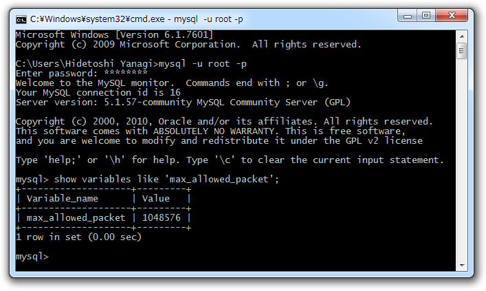

Packets larger than max_allowed_packet are not allowed
公開日：
昨日（XREA/CoreServer の WordPress を Windows Azure Websites に移植してみる → あと一歩まで行けた - だるろぐ、XREA/CoreServer の WordPress を Windows Azure Websites に移植してみる → 成功！ - だるろぐ）は XREA でホスティングしていた WordPress を WebMatrix で
することに成功したので、今日は
を試してみることにした。 Windows 8 環境はよくフリーズするので、あまりサーバーをイジる作業をしたくない。
すると、なんとまた失敗。「Packets larger than max_allowed_packet are not allowed」という見覚えのあるエラーが。
ERROR: リモート データベースをダウンロードできません。詳細については、"http://go.microsoft.com/fwlink/?LinkId=205387" を参照してください 2:25:59: リモート データベースをダウンロードできません。詳細については、"http://go.microsoft.com/fwlink/?LinkId=205387" を参照してください 2:25:59: 発行済みサイトをダウンロードできません。 リモート データベースをダウンロードできません。詳細については、"http://go.microsoft.com/fwlink/?LinkId=205387" を参照してください 2:25:59: エラーの詳細: 2:25:59: An error occurred during execution of the database script. The error occurred between the following lines of the script: "199" and "211". The verbose log might have more information about the error. The command started with the following: 2:25:59: "-- -- Dumping data for table `wp_postmeta` --LOC" 2:25:59: Packets larger than max_allowed_packet are not allowed. http://go.microsoft.com/fwlink/?LinkId=178587 Learn more at: http://go.microsoft.com/fwlink/?LinkId=221672#ERROR_SQL_EXECUTION_FAILURE. : :
昨日（XREA/CoreServer の WordPress を Windows Azure Websites に移植してみる → 成功！ - だるろぐ）は不要なテーブルを削除して回避したのだけど、今回はその手が使えない1。
まぁ、今回は Azure → ローカル の話なので、ローカルにある MySQL の設定を直接イジって max_allowed_packet を増やしてあげればよさそうだ。

初期状態では 1MB となっていたので、これを 16MB 程度に増やしてあげる。インストールフォルダにある“my.ini”の [mysqld] セクションに以下のように追記する2。
[mysqld] max_allowed_packet=16MB
んで、 MySQL のサービスを再起動。 WebMatrix で再度 Web サイトをダウンロードしたら……
成功━━━━(ﾟ∀ﾟ)━━━━!!